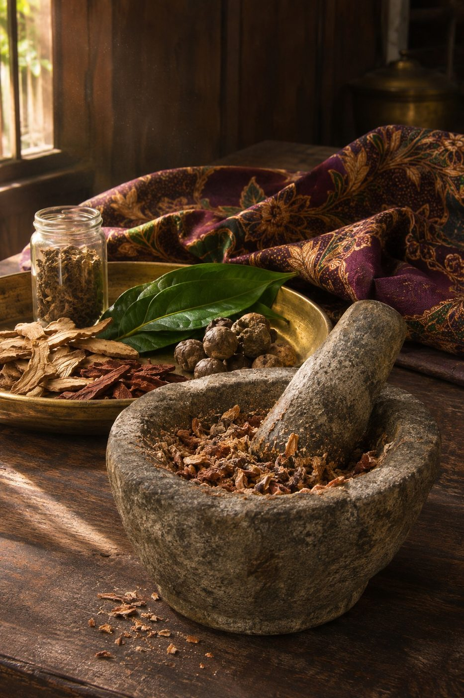

Tentang FEMORA
Herba warisan wanita, disediakan untuk cara hidup hari ini.
Dari dapur nenek ke rutin harian
Hampir setiap keluarga Melayu ada cerita tentang jamu. Periuk akar kayu di atas dapur selepas kakak bersalin. Balang manjakani di rak. Pesanan mak supaya “jaga dalam” sama seperti jaga luar.
Ilmunya masih ada, tetapi tidak ramai yang sempat merebus herba setiap hari. FEMORA dibuat supaya amalan itu boleh diteruskan dengan cara yang lebih mudah.
Dua tradisi, satu ramuan
Di Malaysia, kedai jamu dan kedai sinseh sudah lama berjiran. FEMORA mengambil yang terbaik daripada kedua-duanya: Kacip Fatimah dan Manjakani daripada warisan Melayu sebagai bahan utama, dan lapan herba Ba Zhen daripada tradisi Cina sebagai pelengkap.

Pegangan kami
Kami namakan setiap bahan
Kesemua sepuluh herba disenaraikan pada label dan di halaman Bahan.
Kami tak janji keajaiban
Herba tradisional bukan ubat segera. Kami tidak menjanjikan kesan dalam tempoh tertentu, dan produk ini tidak menggantikan nasihat doktor.
Kami jawab soalan anda
Sebelum atau selepas membeli, tanya kami apa sahaja tentang produk di WhatsApp.
Maklumat syarikat
| Syarikat | [isi: nama syarikat] |
|---|---|
| No. pendaftaran SSM | [isi: no. SSM] |
| Alamat | [isi: alamat syarikat] |
| No. pendaftaran KKM | [isi: no. pendaftaran MAL] |
| [isi: nombor WhatsApp] | |
| Emel | [isi: emel] |